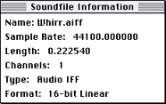
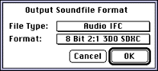

The Soundfile Information box is displayed. The box always describes the "current" sound file. Any command selected from one of the other menus always applies to the current sound file. To change the current sound file, close it and open a new one.

Figure 1: Soundfile Information box.
The sound plays on your Macintosh.

Figure 2: Dialog for changing the sound file format.